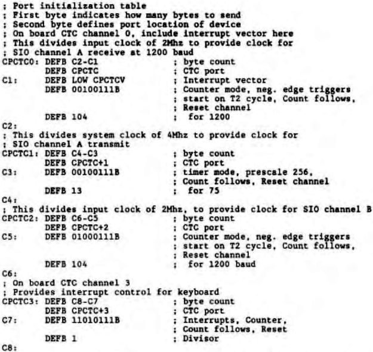

Scorpio News |
April–June 1987 – Volume 1. Issue 2. |
| Page 14 of 51 |
|---|
using software, we reconfigure the CTC to use the divider mode and system clock for 1200/75 baud, and the counter mode and external clock for the faster baudrate of 9600.
The configuration tables for the CTC are:
To switch between 1200/75 and 75/1200 takes a little more work – I had to design a patch for my MODEM, and for CP/M Plus, but it is possible. I hope that this long rambling article will persuade others to try using an unused channel of their CTC – it is a most useful chip. I know of one system where an unused CTC bas employed to provide dooropen interrupts for three drives, and the fourth channel was used to provide a real time clock interrupt to update the on screen date and time every five seconds.
In the next article, I’ll write about the SIO and its programming.
| Page 14 of 51 |
|---|